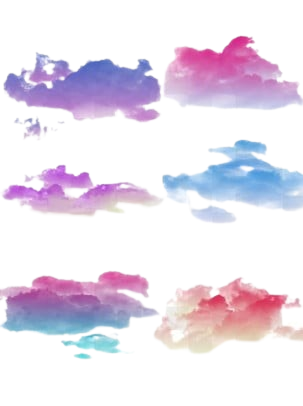

Iona and Amaia looked back one last time, then stepped through the old gate.
A soft breeze followed, like the garden was saying goodbye.
The magic faded. The garden was gone—hidden behind the ivy
"Was it real?" Iona asked.
Amaia held up a silver petal. "I think we’ll always know."

The sky seemed brighter as they walked home. The garden’s magic stayed with them.